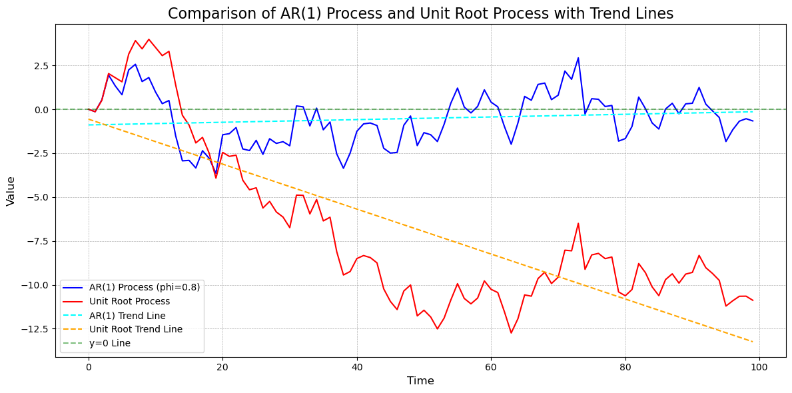
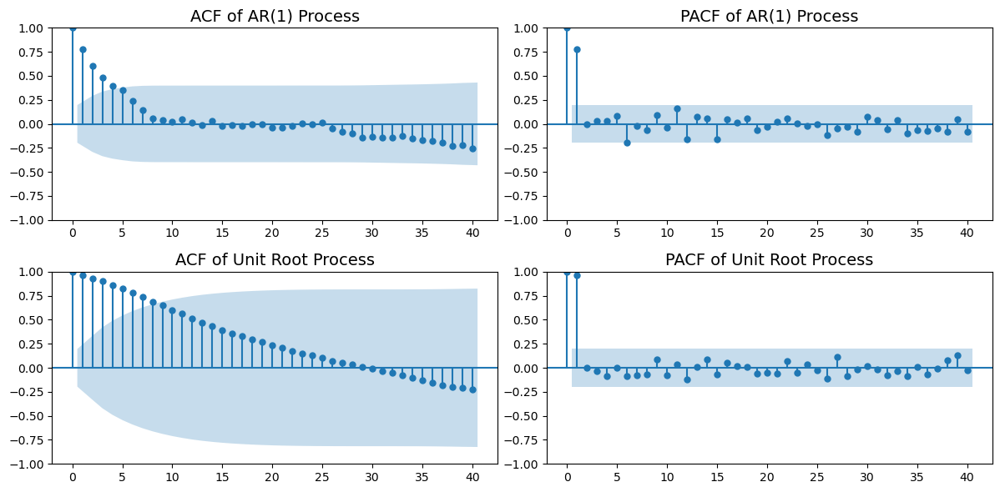
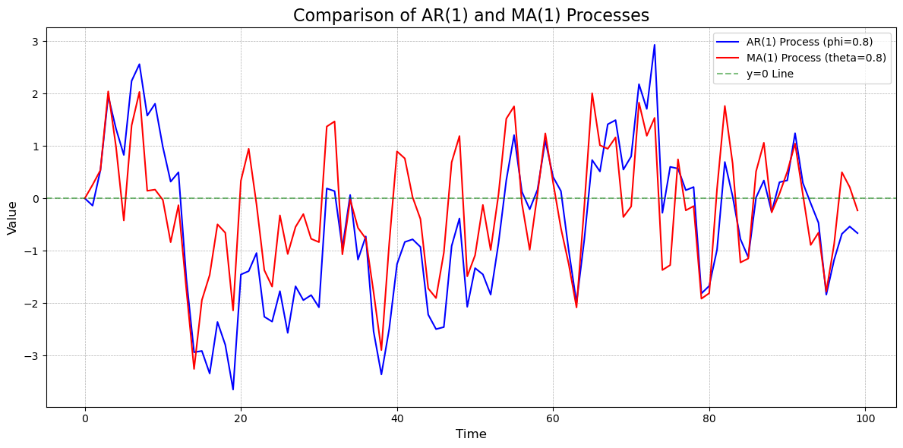
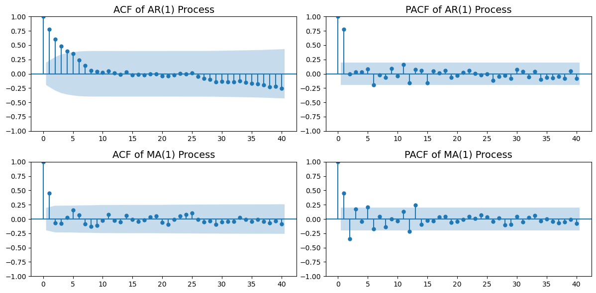
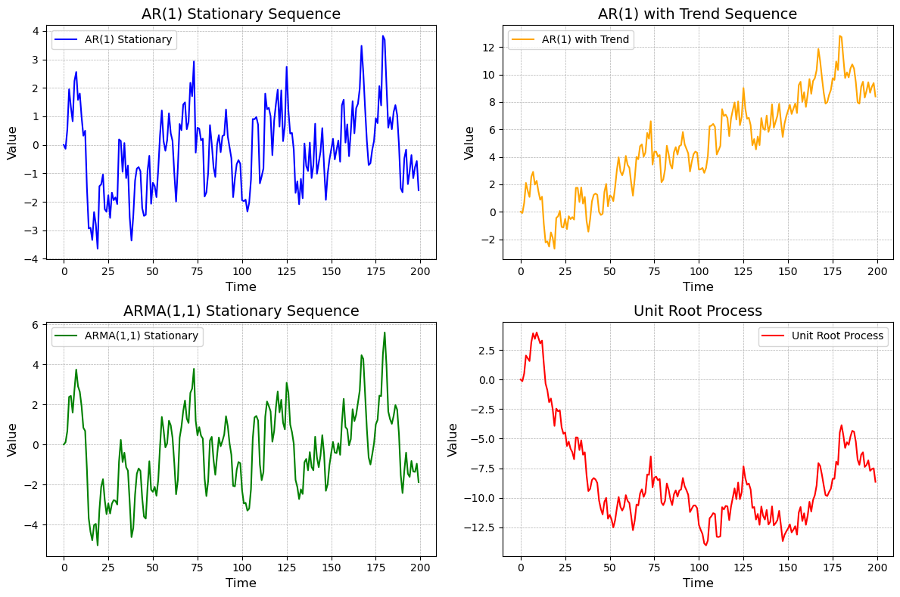
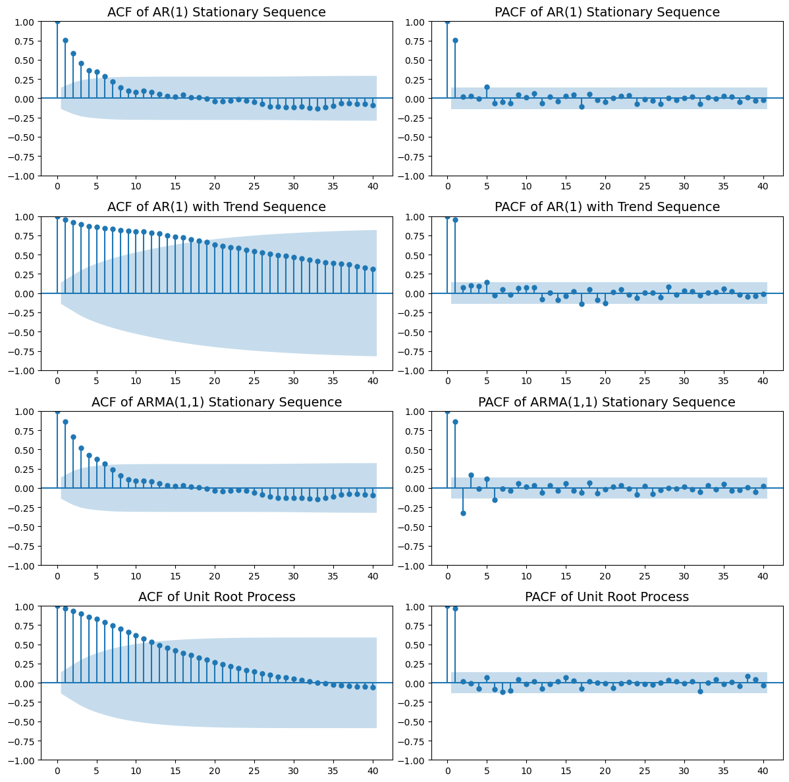

36 ARMA 模型
36.1 \(AR(p)\) 模型
在时间序列分析中，\(AR(p)\) 模型是最基本的模型之一。它假设当前值与过去 \(p\) 个时刻的值存在线性关系。一般形式为：
\[ X_t = \phi_1 X_{t-1} + \phi_2 X_{t-2} + ... + \phi_p X_{t-p} + \epsilon_t \tag{1} \]
其中，\(\phi_1, \phi_2, ..., \phi_p\) 是模型参数，\(\epsilon_t\) 是白噪声项。
36.1.1 \(AR(1)\) 模型
当 \(p=1\) 时，\(AR(1)\) 模型为：
\[ X_t = \phi_1 X_{t-1} + \epsilon_t \tag{2} \]
虽然看起来很简单，但 \(AR(1)\) 模型在时间序列分析中非常重要，因为它可以捕捉到数据的自相关性。从模型设定形式上来看，它具有递推的特征，当前值仅与前一个值相关。
具体而言，(2) 式在 \(t-1\) 时刻可以表示为：
\[ X_{t-1} = \phi_1 X_{t-2} + \epsilon_{t-1} \tag{3} \]
将 (3) 式代入 (2) 式中，我们可以得到：
\[ X_t = \phi_1 (\phi_1 X_{t-2} + \epsilon_{t-1}) + \epsilon_t = \phi_1^2 X_{t-2} + \phi_1 \epsilon_{t-1} + \epsilon_t \tag{4} \]
将 (4) 式继续递推下去，我们可以得到：
\[ X_t = \phi_1^t X_0 + \sum_{i=0}^{t-1} \phi_1^i \epsilon_{t-i} \tag{5} \]
由 (5) 式可知，\(X_t\) 由初始值 \(X_0\) 和过去的随机扰动项 \(\epsilon_{t-i}\) 线性组合而成。
由此，我们可以看出 \(AR(1)\) 模型的一个重要特性：当前值 \(X_t\) 不仅与前一个值 \(X_{t-1}\) 相关，还与更早的值 \(X_{t-2}, X_{t-3}, ...\) 相关。具体来说，当前值 \(X_t\) 是过去所有随机扰动项 \(\epsilon_{t-i}\) 的加权和，其中权重由 \(\phi_1^i\) 决定。随着 \(i\) 的增大，权重 \(\phi_1^i\) 会迅速减小，这表明较早的随机扰动对当前值的影响逐渐减弱。
因此，\(AR(1)\) 模型可以看作是一个具有指数衰减特性的模型。也就是说，当前值 \(X_t\) 主要受到最近的随机扰动项 \(\epsilon_{t-1}\) 的影响，而对更早的随机扰动项的影响则逐渐减弱。这种特性使得 \(AR(1)\) 模型在建模时间序列数据时非常实用，因为它能够有效地捕捉到数据的自相关性和记忆效应。
在实际应用中，\(AR(1)\) 模型常用于建模具有自相关性的时间序列数据，如股票价格、气温等。通过估计参数 \(\phi_1\)，我们可以了解数据的自相关程度，从而为后续的预测和分析提供依据。
36.1.2 单位根过程
前面已经提到，只有当 \(|\phi_1|<1\) 时，\(AR(1)\) 模型才是平稳的。平稳性是时间序列分析中的一个重要概念，它意味着序列的统计特性（如均值、方差和自相关函数）在时间上保持不变。平稳序列的均值和方差是有限的，并且自相关函数仅依赖于时间间隔，而与具体时间点无关。
那么，当 \(|\phi_1|=1\) 时，\(AR(1)\) 模型会发生什么呢？在这种情况下，模型变为：
\[ X_t = X_{t-1} + \epsilon_t \tag{6} \]
我们称这种模型为单位根过程。单位根过程是一种特殊的非平稳序列，其均值和方差随时间变化而变化。具体来说，单位根过程的均值是无限的，而方差是无穷大的。这意味着单位根过程具有非常强的记忆效应，过去的随机扰动对当前值的影响不会随着时间的推移而减弱。
我们可以将 \(\phi_1 = 1\) 带入 (5) 式中，得到：
\[ x_t = X_0 + \sum_{i=0}^{t-1} \epsilon_{t-i} \tag{5} \]
可见，过往的随机扰动项 \(\epsilon_{t-i}\) 对当前值 \(X_t\) 的影响具有累积性，且它们的影响不会随着时间的推移而减弱。这种特性使得单位根过程具有非常强的记忆效应。用大白话来说，它很记仇，即使是 30 年前受到的冲击，它今天仍然记忆犹新。
具体而言，单位根过程的均值和方差可以表示为：
\[ \mu_t = E[X_t] = E[X_{t-1}] + E[\epsilon_t] = \mu_{t-1} + 0 = \mu_0 \tag{7} \]
\[ \sigma^2_t = Var[X_t] = Var[X_{t-1}] + Var[\epsilon_t] = \sigma^2_{t-1} + \sigma^2_\epsilon = \sigma^2_0 + t \cdot \sigma^2_\epsilon \tag{8} \]
36.1.3 AR 过程与单位根过程的区别
AR 过程和单位根过程的主要区别在于平稳性。AR 过程是平稳的，而单位根过程是非平稳的。平稳性意味着序列的统计特性在时间上保持不变，而非平稳性则意味着序列的统计特性随时间变化而变化。
平稳序列的均值和方差是有限的，并且自相关函数仅依赖于时间间隔，而与具体时间点无关。非平稳序列的均值和方差是无限的，并且自相关函数依赖于具体时间点。
下面，我们通过一个简单的模拟实例来说明 AR 过程和单位根过程的区别。
# 模拟分析平稳 AR(1) 过程与单位根过程的差别
import numpy as np
import matplotlib.pyplot as plt
# 设置随机种子以保证结果可重复
np.random.seed(42)
# 模拟 AR(1) 过程 --------- 参数设定 -----------
n = 100 # 时间序列长度
phi = 0.8 # AR(1) 系数
# ------------------------ 参数设定 -----------
epsilon = np.random.normal(0, 1, n) # 白噪声
ar1 = np.zeros(n)
for t in range(1, n):
ar1[t] = phi * ar1[t-1] + epsilon[t]
# 模拟单位根过程
unit_root = np.zeros(n)
for t in range(1, n):
unit_root[t] = unit_root[t-1] + epsilon[t]
# 绘图比较
plt.figure(figsize=(12, 6))
plt.plot(ar1, label="AR(1) Process (phi=0.8)", color="blue")
plt.plot(unit_root, label="Unit Root Process", color="red")
# 添加时间趋势线
time = np.arange(n)
ar1_trend = np.poly1d(np.polyfit(time, ar1, 1))(time)
unit_root_trend = np.poly1d(np.polyfit(time, unit_root, 1))(time)
# 绘图
plt.plot(time, ar1_trend, label="AR(1) Trend Line", color="cyan", linestyle="--")
plt.plot(time, unit_root_trend, label="Unit Root Trend Line", color="orange", linestyle="--")
plt.axhline(y=0, color="green", linestyle="--", alpha=0.5, label="y=0 Line")
plt.title("Comparison of AR(1) Process and Unit Root Process with Trend Lines", fontsize=16)
plt.xlabel("Time", fontsize=12)
plt.ylabel("Value", fontsize=12)
plt.legend()
plt.grid(True, linestyle="--", linewidth=0.5)
plt.tight_layout()
plt.show()
# 基本统计量
import pandas as pd
print("AR(1) Process Statistics:")
print(pd.Series(ar1).describe().round(2))
print("\nUnit Root Process Statistics:")
print(pd.Series(unit_root).describe().round(2))
AR(1) Process Statistics:
count 100.00
mean -0.52
std 1.44
min -3.65
25% -1.67
50% -0.50
75% 0.43
max 2.93
dtype: float64
Unit Root Process Statistics:
count 100.00
mean -6.90
std 4.64
min -12.74
25% -10.36
50% -8.77
75% -4.56
max 3.98
dtype: float64下图呈现了模拟 100 次的结果 (codes)，发现 AR 过程的均值和方差是有限的，而单位根过程的均值虽然有限，但其方差会随着时间的推移不断增大，表现出非平稳的特征。

36.2 相关图和偏相关图
36.2.1 相关图 (ACF, Autocorrelation Function)
相关图展示了时间序列数据在不同滞后期的自相关系数。自相关系数衡量了当前值与过去值之间的线性关系，其定义公式为：
\[ \rho_k = \frac{\text{Cov}(X_t, X_{t-k})}{\sqrt{\text{Var}(X_t) \cdot \text{Var}(X_{t-k})}} \]
其中，\(k\) 表示滞后期，\(\text{Cov}\) 表示协方差，\(\text{Var}\) 表示方差。
36.2.2 偏相关图 (PACF, Partial Autocorrelation Function)
偏相关图展示了时间序列数据在不同滞后期的偏自相关系数。偏自相关系数衡量了当前值与某一滞后值之间的线性关系，剔除了其他中间滞后值的影响。其定义公式为：
\[ \phi_{kk} = \text{Partial Correlation}(X_t, X_{t-k} | X_{t-1}, X_{t-2}, \dots, X_{t-(k-1)}) \]
偏相关系数可以通过递归方法（如 Durbin-Levinson 算法）计算。
36.2.3 相关图和偏相关图的特征
36.2.3.1 AR(p) 模型的相关图和偏相关图特征
- 相关图 (ACF)：AR(p) 模型的自相关函数通常在滞后期 \(k > p\) 时呈指数衰减或振荡衰减。
- 偏相关图 (PACF)：AR(p) 模型的偏自相关函数在滞后期 \(k > p\) 时迅速趋近于零，而在 \(k \leq p\) 时可能显著。
36.2.3.2 单位根过程的相关图特征
单位根过程（如随机游走）的相关图和偏相关图具有以下特征： - 相关图 (ACF)：自相关函数在所有滞后期 \(k\) 上都接近于 1，且衰减非常缓慢。 - 偏相关图 (PACF)：偏自相关函数在滞后期 \(k = 1\) 时显著，而在 \(k > 1\) 时迅速趋近于零。
这些特征反映了单位根过程的非平稳性和强记忆效应。
from statsmodels.graphics.tsaplots import plot_acf, plot_pacf
import matplotlib.pyplot as plt
# 绘制 AR(1) 过程的 ACF 和 PACF
plt.figure(figsize=(12, 6))
plt.subplot(2, 2, 1)
plot_acf(ar1, lags=40, ax=plt.gca())
plt.title('ACF of AR(1) Process', fontsize=14)
plt.subplot(2, 2, 2)
plot_pacf(ar1, lags=40, ax=plt.gca())
plt.title('PACF of AR(1) Process', fontsize=14)
# 绘制单位根过程的 ACF 和 PACF
plt.subplot(2, 2, 3)
plot_acf(unit_root, lags=40, ax=plt.gca())
plt.title('ACF of Unit Root Process', fontsize=14)
plt.subplot(2, 2, 4)
plot_pacf(unit_root, lags=40, ax=plt.gca())
plt.title('PACF of Unit Root Process', fontsize=14)
plt.tight_layout()
plt.show()
36.3 MA 过程
36.3.1 移动平均过程 (Moving Average Process)
移动平均过程 (MA) 是时间序列分析中的一种基本模型。它假设当前值是过去若干期随机扰动项的线性组合。MA 过程的数学表达式为：
\[ X_t = \mu + \epsilon_t + \theta_1 \epsilon_{t-1} + \theta_2 \epsilon_{t-2} + \dots + \theta_q \epsilon_{t-q} \tag{1} \]
其中： - \(X_t\) 是时间序列的当前值； - \(\mu\) 是序列的均值； - \(\epsilon_t\) 是白噪声项，满足 \(E[\epsilon_t] = 0\) 和 \(Var[\epsilon_t] = \sigma^2\)； - \(\theta_1, \theta_2, \dots, \theta_q\) 是模型参数； - \(q\) 是移动平均过程的阶数。
36.3.2 MA(1) 模型
当 \(q=1\) 时，MA(1) 模型的形式为：
\[ X_t = \mu + \epsilon_t + \theta_1 \epsilon_{t-1} \tag{2} \]
在 MA(1) 模型中，当前值 \(X_t\) 由当前随机扰动 \(\epsilon_t\) 和前一期随机扰动 \(\epsilon_{t-1}\) 的加权和决定。
36.3.3 MA 过程的特性
- 平稳性：MA 过程是平稳的，因为它仅依赖于有限个随机扰动项。
- 自相关函数 (ACF)：
- MA(q) 模型的自相关函数在滞后期 \(k > q\) 时为 0；
- 在滞后期 \(k \leq q\) 时，自相关函数可能显著。
- MA(q) 模型的自相关函数在滞后期 \(k > q\) 时为 0；
- 偏自相关函数 (PACF)：
- MA(q) 模型的偏自相关函数在所有滞后期 \(k > 1\) 时迅速衰减；
- 在滞后期 \(k = 1\) 时，偏自相关函数可能显著。
- MA(q) 模型的偏自相关函数在所有滞后期 \(k > 1\) 时迅速衰减；
36.3.4 MA 过程的应用
MA 过程常用于建模时间序列中的短期依赖关系。例如： - 经济数据中的短期波动； - 金融数据中的短期价格变化。
36.3.5 AR 过程和 MA 过程的区别
AR 过程和 MA 过程是时间序列分析中的两种基本模型，它们在建模思路、平稳性、自相关函数和偏自相关函数等方面存在显著差异。以下是它们的主要区别： - 建模思路：AR 过程假设当前值与过去值之间存在线性关系，而 MA 过程假设当前值是过去随机扰动项的线性组合。 - 平稳性：AR 过程的平稳性取决于参数的取值，而 MA 过程是平稳的，因为它仅依赖于有限个随机扰动项。
36.3.5.1 AR(1) 可以表示为 MA(∞)
AR(1) 过程可以通过递归展开的方式表示为 MA(∞) 过程。具体来说，假设 AR(1) 模型为：
\[ X_t = \phi X_{t-1} + \epsilon_t \]
将 \(X_{t-1}\) 代入上述公式，可以得到：
\[ X_t = \phi (\phi X_{t-2} + \epsilon_{t-1}) + \epsilon_t = \phi^2 X_{t-2} + \phi \epsilon_{t-1} + \epsilon_t \]
继续递归下去，可以得到：
\[ X_t = \phi^t X_0 + \sum_{i=0}^{\infty} \phi^i \epsilon_{t-i} \]
由此可见，AR(1) 过程可以表示为一个 MA(∞) 过程，其中当前值 \(X_t\) 是所有过去随机扰动项 \(\epsilon_{t-i}\) 的加权和，权重由 \(\phi^i\) 决定，并随着 \(i\) 的增大呈指数衰减。
# 模拟分析：AR(1) 和 MA(1) 过程的差别
# 模拟 MA(1) 过程
theta = 0.8 # MA(1) 系数
ma1 = np.zeros(n)
for t in range(1, n):
ma1[t] = epsilon[t] + theta * epsilon[t-1]
# 绘图比较 AR(1) 和 MA(1) 过程
plt.figure(figsize=(12, 6))
plt.plot(ar1, label="AR(1) Process (phi=0.8)", color="blue")
plt.plot(ma1, label="MA(1) Process (theta=0.8)", color="red")
# 添加时间趋势线
plt.axhline(y=0, color="green", linestyle="--", alpha=0.5, label="y=0 Line")
plt.title("Comparison of AR(1) and MA(1) Processes", fontsize=16)
plt.xlabel("Time", fontsize=12)
plt.ylabel("Value", fontsize=12)
plt.legend()
plt.grid(True, linestyle="--", linewidth=0.5)
plt.tight_layout()
plt.show()
36.3.6 AR(1) 和 MA(1) 的区别：ACF 和 PACF
AR(1) 和 MA(1) 模型在自相关函数 (ACF) 和偏自相关函数 (PACF) 上有显著的区别。以下是它们的主要区别： - AR(1) 模型： - ACF：在滞后期 \(k > 1\) 时，ACF 呈指数衰减或振荡衰减； - PACF：在滞后期 \(k = 1\) 时显著，而在 \(k > 1\) 时迅速趋近于零。 - 这表明 AR(1) 模型具有长记忆效应，当前值与过去值之间存在较强的线性关系。 - MA(1) 模型： - ACF：在滞后期 \(k > 1\) 时迅速趋近于零； - PACF：在滞后期 \(k = 1\) 时显著，而在 \(k > 1\) 时迅速趋近于零。 - 这表明 MA(1) 模型具有短记忆效应，当前值主要受最近的随机扰动项影响。
from statsmodels.graphics.tsaplots import plot_acf, plot_pacf
# ACF 和 PACF 分析：AR(1) v.s. MA(1)
import matplotlib.pyplot as plt
# 绘制 AR(1) 过程的 ACF 和 PACF
plt.figure(figsize=(12, 6))
plt.subplot(2, 2, 1)
plot_acf(ar1, lags=40, ax=plt.gca())
plt.title('ACF of AR(1) Process', fontsize=14)
plt.subplot(2, 2, 2)
plot_pacf(ar1, lags=40, ax=plt.gca())
plt.title('PACF of AR(1) Process', fontsize=14)
# 绘制 MA(1) 过程的 ACF 和 PACF
plt.subplot(2, 2, 3)
plot_acf(ma1, lags=40, ax=plt.gca())
plt.title('ACF of MA(1) Process', fontsize=14)
plt.subplot(2, 2, 4)
plot_pacf(ma1, lags=40, ax=plt.gca())
plt.title('PACF of MA(1) Process', fontsize=14)
plt.tight_layout()
plt.show()
36.4 ARMA(p, q) 模型
ARMA 模型（AutoRegressive Moving Average Model，自回归移动平均模型）是时间序列分析中的一种经典模型。它结合了 AR(p) 模型和 MA(q) 模型的特性，用于描述时间序列数据的线性依赖结构。
ARMA(p, q) 模型的数学表达式为：
\[ X_t = \phi_1 X_{t-1} + \phi_2 X_{t-2} + \dots + \phi_p X_{t-p} + \epsilon_t + \theta_1 \epsilon_{t-1} + \theta_2 \epsilon_{t-2} + \dots + \theta_q \epsilon_{t-q} \]
其中： - \(X_t\) 是时间序列的当前值； - \(\phi_1, \phi_2, \dots, \phi_p\) 是 AR 部分的参数； - \(\theta_1, \theta_2, \dots, \theta_q\) 是 MA 部分的参数； - \(\epsilon_t\) 是白噪声项，满足 \(E[\epsilon_t] = 0\) 和 \(Var[\epsilon_t] = \sigma^2\)； - \(p\) 是自回归部分的阶数； - \(q\) 是移动平均部分的阶数。
36.4.1 特性
- 平稳性：ARMA 模型要求时间序列是平稳的，即均值、方差和自相关函数在时间上保持不变。
- 自相关函数 (ACF) 和 偏自相关函数 (PACF)：
- ARMA 模型的 ACF 和 PACF 通常在滞后期 \(k > \max(p, q)\) 时迅速衰减。
- ACF 和 PACF 的具体模式取决于 \(p\) 和 \(q\) 的值。
36.4.2 模型选择
在实际应用中，选择 ARMA 模型的阶数 \(p\) 和 \(q\) 通常需要结合以下方法： 1. ACF 和 PACF 图：通过观察时间序列的 ACF 和 PACF 图，初步判断 \(p\) 和 \(q\) 的可能值。 2. 信息准则：如 AIC（Akaike 信息准则）和 BIC（贝叶斯信息准则），用于选择最优的 \(p\) 和 \(q\)。 3. 模型拟合优度：通过比较不同模型的拟合效果，选择最优模型。
36.4.3 应用场景
ARMA 模型适用于平稳时间序列的建模和预测，常见的应用场景包括： - 经济数据（如 GDP、消费指数）的短期预测； - 金融数据（如股票价格、汇率）的波动分析； - 工业过程中的信号处理。
36.4.4 示例
在上文中，我们已经模拟了 AR(1) 和 MA(1) 过程，并绘制了它们的 ACF 和 PACF 图。接下来，我们可以尝试拟合 ARMA 模型来描述这些时间序列的特性。
以下是拟合 ARMA 模型的步骤： 1. 检查时间序列的平稳性（如 ADF 检验）。 2. 绘制 ACF 和 PACF 图，初步判断 \(p\) 和 \(q\) 的值。 3. 使用 statsmodels 库中的 ARIMA 模块拟合 ARMA 模型。 4. 检查模型的残差是否为白噪声。 5. 使用模型进行预测。
通过 ARMA 模型，我们可以更好地理解时间序列的动态特性，并进行有效的预测。
36.4.5 注意
多数情况下，使用 ARMA(1,1) 模型就可以描述多数平稳时间序列的特征：
\[ X_t = \phi_1 X_{t-1} + \theta_1 \epsilon_{t-1} + \epsilon_t \]
36.5 单位根检验
从上面的 \(ARMA(1,1)\) 模型的结果来看，\(AR(1)\) 系数的估计值为 \(0.9847\)，接近于 \(1\)，这表明该序列可能是一个单位根序列。
我们可以使用 statsmodels 库中的 adfuller 函数来进行单位根检验。
36.5.1 ADF 检验
给定一个时间序列 \(X_t\)，我们可以使用以下的 ADF 检验来检验 \(X_t\) 是否是平稳的： \[ X_t = \phi_0 + \phi_1 X_{t-1} + \phi_2 X_{t-2} + ... + \phi_p X_{t-p} + \epsilon_t\] 其中，\(\epsilon_t\) 是一个白噪声序列。
ADF 检验的原假设是：\(X_t\) 是一个单位根序列，即 \(H_0: \phi_1 = 1\)。 如果 \(H_0\) 被拒绝，则说明 \(X_t\) 是平稳的。
ADF 检验包含几种典型的数据生成机制： - 纯随机游走：\(X_t = X_{t-1} + \epsilon_t\)，其中 \(\epsilon_t\) 是一个白噪声序列。 - 随机游走加趋势：\(X_t = \phi_0 + \phi_1 X_{t-1} + \phi_2 t + \epsilon_t\)，其中 \(\epsilon_t\) 是一个白噪声序列，\(t\) 是时间趋势项。 - 随机游走加季节性：\(X_t = \phi_0 + \phi_1 X_{t-1} + S_t + \epsilon_t\)，其中 \(\epsilon_t\) 是一个白噪声序列，\(S_t\) 是季节性项。 - 随机游走加趋势和季节性：\(X_t = \phi_0 + \phi_1 X_{t-1} + \phi_2 t + S_t + \epsilon_t\)，其中 \(\epsilon_t\) 是一个白噪声序列，\(t\) 是时间趋势项，\(S_t\) 是季节性项。
36.5.2 其它检验方法
除了 ADF 检验，还有其他一些常用的单位根检验方法，如 KPSS 检验和 PP 检验。
36.5.2.1 KPSS 检验
KPSS 检验的原假设是：\(X_t\) 是平稳的，即 \(H_0: \phi_1 < 1\)。 如果 \(H_0\) 被拒绝，则说明 \(X_t\) 是一个单位根序列。
36.5.2.2 PP 检验
PP 检验的原假设是：\(X_t\) 是一个单位根序列，即 \(H_0: \phi_1 = 1\)。 如果 \(H_0\) 被拒绝，则说明 \(X_t\) 是平稳的。
36.5.3 模拟分析
我们生成四个不同的时间序列，分别是 AR(1)、带时间趋势的 AR(1)、ARMA(1,1) 和单位根过程。以下是它们的生成过程：
AR(1) 平稳序列
AR(1) 模型的数学表达式为：
\[ X_t = \phi X_{t-1} + \epsilon_t \]
其中，\(\phi = 0.8\)，\(\epsilon_t\) 是均值为 0、方差为 1 的白噪声。带时间趋势的 AR(1) 序列
在 AR(1) 模型的基础上加入线性时间趋势：
\[ X_t = \phi X_{t-1} + \epsilon_t + \text{trend}(t) \]
其中，\(\text{trend}(t)\) 是一个线性增长的时间趋势项。ARMA(1,1) 平稳序列
ARMA(1,1) 模型的数学表达式为：
\[ X_t = \phi X_{t-1} + \epsilon_t + \theta \epsilon_{t-1} \]
其中，\(\phi = 0.8\)，\(\theta = 0.5\)，\(\epsilon_t\) 是均值为 0、方差为 1 的白噪声。单位根过程
单位根过程的数学表达式为：
\[ X_t = X_{t-1} + \epsilon_t \]
其中，\(\epsilon_t\) 是均值为 0、方差为 1 的白噪声。
通过这些序列的生成，我们可以观察不同时间序列的特性，并进行单位根检验和其他分析。
import statsmodels.api as sm
from statsmodels.tsa.stattools import adfuller
import numpy as np
import pandas as pd
import matplotlib.pyplot as plt
# 模拟四个序列
np.random.seed(42)
n = 200 # 时间序列长度
epsilon = np.random.normal(0, 1, n)
# 1. AR(1) 平稳
phi = 0.8
ar1_stationary = np.zeros(n)
for t in range(1, n):
ar1_stationary[t] = phi * ar1_stationary[t-1] + epsilon[t]
# 2. AR(1) + 时间趋势
trend = np.linspace(0, 10, n)
ar1_with_trend = np.zeros(n)
for t in range(1, n):
ar1_with_trend[t] = phi * ar1_with_trend[t-1] + epsilon[t]
ar1_with_trend += trend
# 3. ARMA(1,1) 平稳
theta = 0.5
arma11_stationary = np.zeros(n)
for t in range(1, n):
arma11_stationary[t] = phi * arma11_stationary[t-1] + epsilon[t] + theta * epsilon[t-1]
# 4. 单位根过程
unit_root = np.zeros(n)
for t in range(1, n):
unit_root[t] = unit_root[t-1] + epsilon[t]36.5.3.1 图形比较
我们先直观地展示这四个序列的图形，然后再分析其 ACF 和 PACF 图，最后通过单位根检验来验证它们的平稳性。
# 绘图比较
plt.figure(figsize=(12, 8))
# AR(1) 平稳序列
plt.subplot(2, 2, 1)
plt.plot(ar1_stationary, label="AR(1) Stationary", color="blue")
plt.title("AR(1) Stationary Sequence", fontsize=14)
plt.xlabel("Time", fontsize=12)
plt.ylabel("Value", fontsize=12)
plt.legend()
plt.grid(True, linestyle="--", linewidth=0.5)
# AR(1) + 时间趋势序列
plt.subplot(2, 2, 2)
plt.plot(ar1_with_trend, label="AR(1) with Trend", color="orange")
plt.title("AR(1) with Trend Sequence", fontsize=14)
plt.xlabel("Time", fontsize=12)
plt.ylabel("Value", fontsize=12)
plt.legend()
plt.grid(True, linestyle="--", linewidth=0.5)
# ARMA(1,1) 平稳序列
plt.subplot(2, 2, 3)
plt.plot(arma11_stationary, label="ARMA(1,1) Stationary", color="green")
plt.title("ARMA(1,1) Stationary Sequence", fontsize=14)
plt.xlabel("Time", fontsize=12)
plt.ylabel("Value", fontsize=12)
plt.legend()
plt.grid(True, linestyle="--", linewidth=0.5)
# 单位根过程
plt.subplot(2, 2, 4)
plt.plot(unit_root, label="Unit Root Process", color="red")
plt.title("Unit Root Process", fontsize=14)
plt.xlabel("Time", fontsize=12)
plt.ylabel("Value", fontsize=12)
plt.legend()
plt.grid(True, linestyle="--", linewidth=0.5)
plt.tight_layout()
plt.show()
36.5.3.2 ACF 和 PACF 图
我们可以使用 statsmodels 库中的 plot_acf 和 plot_pacf 函数来绘制 ACF 和 PACF 图。以下是对四个序列的 ACF 和 PACF 图的分析：
# 绘制 ACF 和 PACF 图
from statsmodels.graphics.tsaplots import plot_acf, plot_pacf
plt.figure(figsize=(12, 12))
# AR(1) 平稳序列
plt.subplot(4, 2, 1)
plot_acf(ar1_stationary, lags=40, ax=plt.gca())
plt.title('ACF of AR(1) Stationary Sequence', fontsize=14)
plt.subplot(4, 2, 2)
plot_pacf(ar1_stationary, lags=40, ax=plt.gca())
plt.title('PACF of AR(1) Stationary Sequence', fontsize=14)
# AR(1) + 时间趋势序列
plt.subplot(4, 2, 3)
plot_acf(ar1_with_trend, lags=40, ax=plt.gca())
plt.title('ACF of AR(1) with Trend Sequence', fontsize=14)
plt.subplot(4, 2, 4)
plot_pacf(ar1_with_trend, lags=40, ax=plt.gca())
plt.title('PACF of AR(1) with Trend Sequence', fontsize=14)
# ARMA(1,1) 平稳序列
plt.subplot(4, 2, 5)
plot_acf(arma11_stationary, lags=40, ax=plt.gca())
plt.title('ACF of ARMA(1,1) Stationary Sequence', fontsize=14)
plt.subplot(4, 2, 6)
plot_pacf(arma11_stationary, lags=40, ax=plt.gca())
plt.title('PACF of ARMA(1,1) Stationary Sequence', fontsize=14)
# 单位根过程
plt.subplot(4, 2, 7)
plot_acf(unit_root, lags=40, ax=plt.gca())
plt.title('ACF of Unit Root Process', fontsize=14)
plt.subplot(4, 2, 8)
plot_pacf(unit_root, lags=40, ax=plt.gca())
plt.title('PACF of Unit Root Process', fontsize=14)
plt.tight_layout()
plt.show()
36.5.4 单位根检验
我们可以使用 statsmodels 库中的 adfuller 函数来进行单位根检验。以下是对四个序列的单位根检验结果的分析：
# 定义 test_stationarity 函数
def test_stationarity(timeseries):
# 进行ADF检验
adf_result = adfuller(timeseries)
print(f'ADF Statistic: {adf_result[0]}')
print(f'p-value: {adf_result[1]}')
if adf_result[1] <= 0.05:
print("Reject the null hypothesis: The time series is stationary.")
else:
print("Fail to reject the null hypothesis: The time series is non-stationary.")
# 进行KPSS检验
from statsmodels.tsa.stattools import kpss
kpss_result = kpss(timeseries, regression='c')
print(f'KPSS Statistic: {kpss_result[0]}')
print(f'p-value: {kpss_result[1]}')
if kpss_result[1] <= 0.05:
print("Reject the null hypothesis: The time series is non-stationary.")
else:
print("Fail to reject the null hypothesis: The time series is stationary.")
# 执行单位根检验
print("AR(1) 平稳序列:")
test_stationarity(ar1_stationary)
print("\nAR(1) + 时间趋势序列:")
test_stationarity(ar1_with_trend)
print("\nARMA(1,1) 平稳序列:")
test_stationarity(arma11_stationary)
print("\n单位根序列:")
test_stationarity(unit_root)AR(1) 平稳序列:
ADF Statistic: -5.140188092198668
p-value: 1.1632040113030607e-05
Reject the null hypothesis: The time series is stationary.
KPSS Statistic: 0.40971623118293043
p-value: 0.0729671417314955
Fail to reject the null hypothesis: The time series is stationary.
AR(1) + 时间趋势序列:
ADF Statistic: -1.083734015465617
p-value: 0.7215148114561589
Fail to reject the null hypothesis: The time series is non-stationary.
KPSS Statistic: 1.9346683267076523
p-value: 0.01
Reject the null hypothesis: The time series is non-stationary.
ARMA(1,1) 平稳序列:
ADF Statistic: -3.6707270981703113
p-value: 0.004544260482266915
Reject the null hypothesis: The time series is stationary.
KPSS Statistic: 0.40642058881067256
p-value: 0.07438767723677908
Fail to reject the null hypothesis: The time series is stationary.
单位根序列:
ADF Statistic: -2.3072851790645252
p-value: 0.1696291207894372
Fail to reject the null hypothesis: The time series is non-stationary.
KPSS Statistic: 0.7001396636588889
p-value: 0.013532757849191916
Reject the null hypothesis: The time series is non-stationary.C:\Users\arlio\AppData\Local\Temp\ipykernel_4892\3041600984.py:14: InterpolationWarning: The test statistic is outside of the range of p-values available in the
look-up table. The actual p-value is smaller than the p-value returned.
kpss_result = kpss(timeseries, regression='c')36.6 待更新
# 3. VAR模型
def fit_var_model(data, maxlags=15):
model = VAR(data)
results = model.fit(maxlags=maxlags, ic='aic')
print(results.summary())
return results
# 4. Granger因果关系检验
def granger_causality_test(data, max_lag=15):
test_result = grangercausalitytests(data, max_lag, verbose=True)
return test_result
# 5. 协整检验
def cointegration_test(data):
score, p_value, _ = coint(data.iloc[:, 0], data.iloc[:, 1])
print(f'Cointegration test statistic: {score}')
print(f'p-value: {p_value}')
if p_value <= 0.05:
print("Reject the null hypothesis: The time series are cointegrated.")
else:
print("Fail to reject the null hypothesis: The time series are not cointegrated.")
# 6. VAR模型的脉冲响应函数
def impulse_response_function(model, steps=10):
irf = model.irf(steps)
irf.plot(orth=False)
plt.show()
# 7. VAR模型的方差分解
def variance_decomposition(model, steps=10):
fevd = model.fevd(steps)
fevd.plot()
plt.show()
# 8. VAR模型的预测
def forecast_var_model(model, steps=10):
forecast = model.forecast(model.y, steps=steps)
forecast_df = pd.DataFrame(forecast, index=pd.date_range(start=df_unemp.index[-1] + pd.DateOffset(1), periods=steps, freq='M'), columns=model.names)
return forecast_df